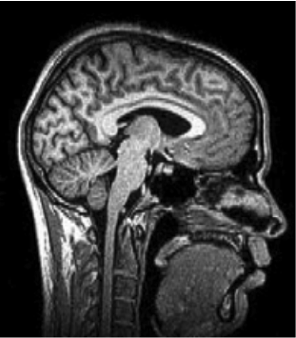

Exam I review
2025-09-23
Rick Gilmore
Department of Psychology
Today’s topics
- Warm-up
- Quiz 1 review
- Exam 1 review
Warm-up
Where are potassium (K+) ions concentrated the most?
- A. Inside the neuron
- B. Outside the neuron
- C. In microglia
- D. None of the above
Where are potassium (K+) ions concentrated the most?
- A. Inside the neuron
B. Outside the neuronC. In microgliaD. None of the above
Where are potassium (Na+) ions concentrated the most?
- A. Inside the neuron
- B. Outside the neuron
- C. In microglia
- D. None of the above
Where are potassium (Na+) ions concentrated the most?
A. Inside the neuron- B. Outside the neuron
C. In microgliaD. None of the above
In a neuron at resting potential, what force(s) act on \(Na^+\)?
- A. Force of diffusion: pushing inward
- B. Force of diffusion: pushing outward
- C. Electrostatic force: pulling inward
- D. A and C.
In a neuron at resting potential, what force(s) act on \(Na^2\)?
- A. Force of diffusion: pushing inward
- B. Force of diffusion: pushing outward
C. Electrostatic force: pulling inward- D. A and C.
Quiz 1
1. The image represents what type of slice?
- A. Sagittal
- B. Horizontal
- C. Coronal
- D. Axial

1. The image represents what type of slice?
- A. Sagittal
- B. Horizontal
- C. Coronal
- D. Axial
2. All of the following structures can be seen in the figure EXCEPT
- A. Cerebellum
- B. Corpus callosum
- C. Lateral ventricles
- D. Cerebral cortex
2. All of the following structures can be seen in the figure EXCEPT
- A. Cerebellum
- B. Corpus callosum
- C. Lateral ventricles
- D. Cerebral cortex
3. The figure illustrates which imaging model?
- A. CT
- B. PET
- C. Magnetoencephalography (MEG)
- D. MRI
3. The figure illustrates which imaging model?
- A. CT
- B. PET
- C. Magnetoencephalography (MEG)
- D. MRI
4. In the mid-1600s, reflexes and animal minds were thought of as ____.
- A. Human minds
- B. Machines
- C. Early computers
- D. Artificial intelligence
4. In the mid-1600s, reflexes and animal minds were thought of as ____.
- A. Human minds
- B. Machines
- C. Early computers
- D. Artificial intelligence
5. Descartes thought that this structure was the place where the soul influenced the human body’s voluntary movements.
- A. The pons
- B. The pituitary gland
- C. The pineal gland
- D. The reflexive complex
5. Descartes thought that this structure was the place where the soul influenced the human body’s voluntary movements.
- A. The pons
- B. The pituitary gland
- C. The pineal gland
- D. The reflexive complex
6. The tongue is _______________ with respect to the nose.
- A. Ventral
- B. Superior
- C. Dorsal
- D. Medial
6. The tongue is _______________ with respect to the nose.
- A. Ventral
- B. Superior
- C. Dorsal
- D. Medial
7. Which of the following is NOT MRI-related?
- A. Diffusion Tensor Imaging (DTI)
- B. Voxel-based Morphometry (VBM)
- C. Computed Tomography (CT)
- D. Magnetic Resonance (MR) spectroscopy
7. Which of the following is NOT MRI-related?
- A. Diffusion Tensor Imaging (DTI)
- B. Voxel-based Morphometry (VBM)
- C. Computed Tomography (CT)
- D. Magnetic Resonance (MR) spectroscopy
8. What is single/multi-unit recording most commonly used in?
- A. Humans
- B. Animals
- C. Both
- D. Neither
8. What is single/multi-unit recording most commonly used in?
- A. Humans
- B. Animals
- C. Both
- D. Neither
9. Electroencephalography (EEG) has ___ temporal resolution than functional MRI, but ___ spatial resolution.
- A. better; similar
- B. better; worse
- C. worse; better
- D. worse; similar
9. Electroencephalography (EEG) has ___ temporal resolution than functional MRI, but ___ spatial resolution.
- A. better; similar
- B. better; worse
- C. worse; better
- D. worse; similar
10. Which of these landmarks separates the frontal lobe from the parietal lobe?
- A. Lateral fissure
- B. Longitudinal fissure
- C. Anterior cingulate gyrus
- D. Central sulcus
10. Which of these landmarks separates the frontal lobe from the parietal lobe?
- A. Lateral fissure
- B. Longitudinal fissure
- C. Anterior cingulate gyrus
- D. Central sulcus
11. Which brain structure means “little brain”?
- A. Tectum
- B. Hippocampus
- C. Cerebrum
- D. Cerebellum
11. Which brain structure means “little brain”?
- A. Tectum
- B. Hippocampus
- C. Cerebrum
- D. Cerebellum
Exam 1 review
Neuroanatomy
- Identify the lobes of the cerebral cortex from a brain image
- Sulcus/fissure landmarks of frontal, temporal, parietal lobe, cerebral hemispheres
- Identify hindbrain regions from a brain image
Neuroanatomy
- Function, location, components of midbrain
- Parts and role of meninges
- Funtion of sympathetic vs. parasympathetic nervous system
Neuroanatomy
- Function, location of hypothalamus
- Function, location of hippocampus
Methods
- Identify planes of section from a brain image
- Which methods use MR, X-rays, electromagnetic fields
Cells of the brain
- Types of glial cells, where found
- Role of dendrites, axon
- Unusual features of neurons (vs. other cells)
Resting potential
- What does Na+/K+ pump do?
- How does the force of diffusion act on K+? Na+?
- What organic anions A- can and can’t do, where concentrated
Action potential
- Major event(s) during rising phase of action potential, falling phase
- Types of refratory period
- What happens when neuron reaches threshold?
- Function of Nodes of Ranvier
Next time
- Exam 1
Resources
About
This talk was produced using Quarto, using the RStudio Integrated Development Environment (IDE), version 2025.5.1.513.
The source files are in R and R Markdown, then rendered to HTML using the revealJS framework. The HTML slides are hosted in a GitHub repo and served by GitHub pages: https://psu-psychology.github.io/psych-260-2025-fall/
References

PSYCH 260.001 | © Rick Gilmore under CC BY 4.0